Guía Completa de Configuración de Parámetros de Tienda
⚙ 1.CONFIGURACIÓN
1.1 Configuración General
La página de Configuración General contiene varios parámetros que afectan la
funcionalidad básica de tu tienda y que no se ajustan a otras secciones.
A continuación, te explicamos cómo configurar cada una de estas opciones
Habilitar SSL (Capa de Sockets Seguros):
Activa la protección de datos sensibles mediante SSL(Secure Sockets Layer) .
Aumentar la seguridad en el frontend:
Agrega tokens únicostokens únicos a las URLs para proteger la sesión del cliente durante la compra.
Permitir iframes en campos HTML:
Permite insertar contenido externo como videos o mapas. Recomendado solo si es necesario.
Usar la biblioteca HTMLPurifier:
Filtra y limpia datos enviados por usuarios para evitar ataques maliciosos. Recomendado activarla.
Modo de redondeo:
Ajusta los precios para mostrarse con el número de decimales especificado, afectando cálculos de
impuestos y descuentos.
Puedes redondear valores de diferentes formas, como redondeo hacia arriba, hacia abajo o al número
par/impar más cercano.
Tipos de Redondeo:
Aplica el redondeo en cada artículo individual, en cada línea de pedido o en el total final.
Número de decimales:
Define los decimales a los que se redondeará el precio, por ejemplo, a dos decimales ($42.33).
Mostrar marcas y proveedores:
Habilita las páginas de marcas y proveedores en el frontend incluso si los módulos están
desactivados.
Mostrar los más vendidos:
Permite mostrar una lista de los productos más populares en el frontendde tu tienda,
incluso si el módulo de "Productos más vendidos" está desactivado. Esto permite que tus clientes
vean qué productos están siendo más populares en tu tienda, lo que puede aumentar las ventas..
Habilitar Multitienda:
Transforma tu PrestaShop en una configuración de múltiples tiendas, permitiendo gestión
centralizada.
Actividad principal de la tienda:
Selecciona la actividad correcta para configurar parámetros fiscales y otros aspectos de acuerdo a
tu tipo de negocio.
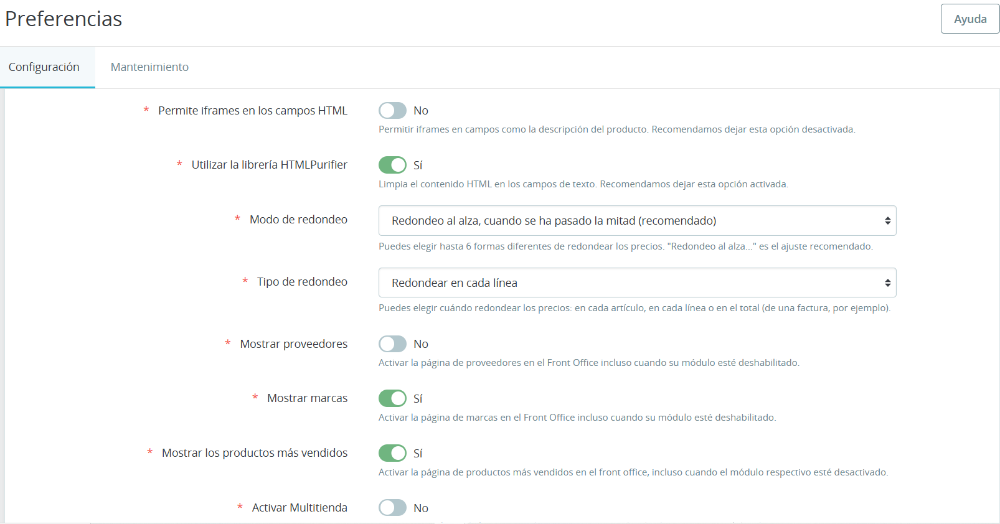
Figura 1.1:Configuración General.
1.2 Mantenimiento
La página de Mantenimiento permite realizar cambios sin que los clientes vean los cambios hasta que
decidas hacerlos públicos. Es útil cuando agregas productos, pruebas funciones o modificas temas.
Habilitar tienda:
Desactiva temporalmente la tienda para realizar mantenimiento Por ejemplo, si necesitas realizar
tareas de mantenimiento o agregar productos masivamente,
puedes poner tu tienda en modo de mantenimiento para que los clientes no puedan acceder a ella.Sin
embargo,
puedes seguir trabajando en tu tienda y realizar todos los cambios necesarios sin que los usuarios
los vean hasta que estés listo para hacerlos públicos.
IP de mantenimiento: Agrega IPs específicas para que ciertas personas accedan a la
tienda durante el mantenimiento.
Para agregar tu IP, simplemente accede a un sitio web como What is my IP desde la máquina en la que
estás trabajando, y luego haz clic en "Añadir mi IP" para
agregarla a la lista o
Abre la consola de comandos (CMD) y escribe ipconfig. La dirección IP se mostrará bajo "Dirección IPv4"
.
Texto personalizado de mantenimiento:
Muestra un mensaje personalizado explicando el motivo del mantenimiento y cuándo volverá a estar
disponible la tienda.
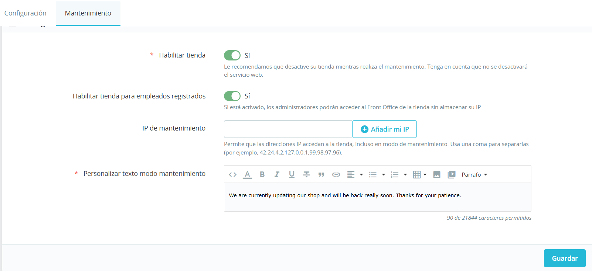
Figura 1.1:Configuración General.
🛒 2.CONFIGURACIÓN DE PEDIDOS
2.1 Preferencias Generales
Habilitar resumen final:
Mostrar un resumen con direcciones, método de envío y contenido del carrito antes del botón de
pedido (requerido en algunos países europeos).
Habilitar compra como invitado:
Permite a los usuarios realizar pedidos sin necesidad de crear una cuenta.
Deshabilitar opción de reordenar:
Desactiva la opción de reordenar un pedido desde el historial.
Total mínimo de compra para validar un pedido:
Define un monto mínimo para completar un pedido.
Recalcular costos de envío después de editar el pedido:
Actualiza automáticamente los costos de envío si se modifica un pedido.
Envío retrasado:
Si permites la opción de "Permitir pedidos de productos fuera de stock" (en la configuración de
productos),
puedes dividir los pedidos en envíos separados. Los productos disponibles se enviarán de
inmediato,
mientras que los productos fuera de stock quedarán pendientes para un envío posterior.k.
Términos de servicio:
Al habilitar esta opción, los clientes deberán aceptar tus términos de servicio antes de poder
validar su pedido.
Esto es importante para asegurar que los clientes estén informados de las condiciones de .
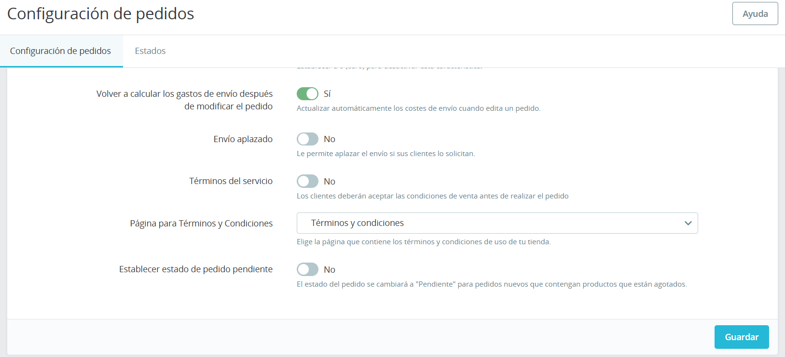
Figura 2.1: Configuración de pedidos.
2.1.1 Opciones de Regalo
Ofrecer envoltura de regalo: Permite a los clientes seleccionar envoltura de
regalo y mensaje personalizado.
Precio de envoltura de regalo: Define el costo del servicio de envoltura de
regalo.
Impuesto sobre envoltura de regalo: Asigna el impuesto correspondiente.
Ofrecer embalaje reciclado: Opción para embalaje ecológico.
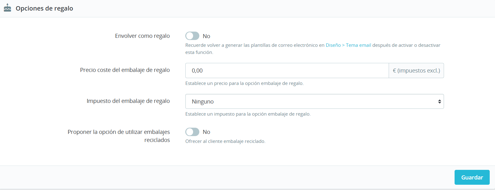
Figura 2.1: Configuración de opción de regalo.
2.2 Estados de los Pedidos
Los Estados de los Pedidos facilitan la gestión de órdenes y devoluciones,
informando a los clientes sobre el progreso de sus compras. Edita los estados de los pedidos en la
página de Estados en el menú de Configuración de Pedidos.
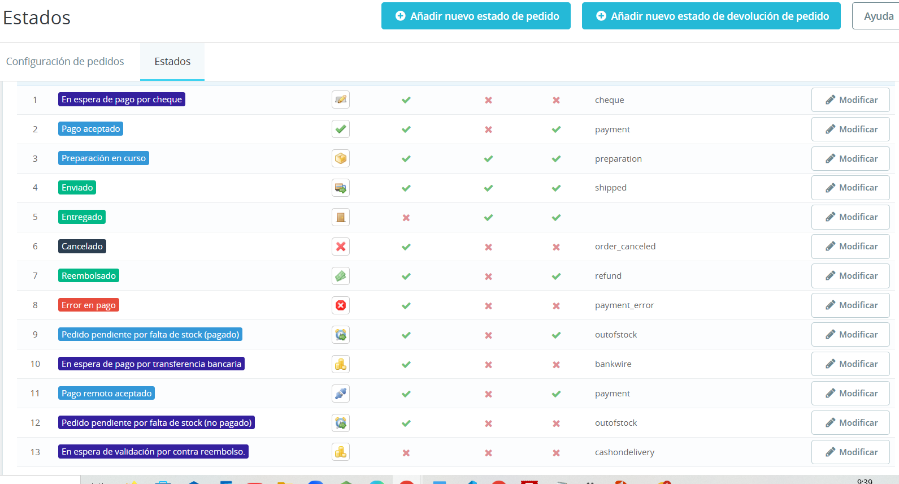
Figura 2.2.a: Configuración de Estado de Pedido.
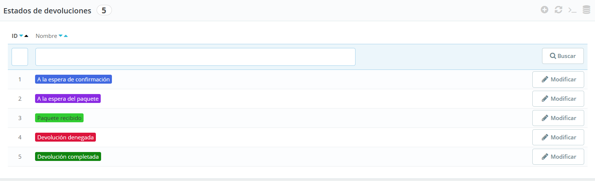
Figura 2.2.b: Configuración de Estado de Devolución.
2.2.1 Creación de un nuevo estado de pedido:
Personaliza el estado del pedido con nombre, color y opciones adicionales.
Acceso: Haz clic en "Añadir nuevo estado de pedido" en la parte
superior de la página de "Estados".
Formulario: Completa con:
Nombre del estado: Corto y distintivo.
Ícono: Cualquier icono de 16x16 píxeles.
Color: Elige colores adecuados, como rojo para cancelados,
verde para entregados, etc.
Opciones:
Marcar el pedido como validado.
Permitir descarga de la factura en PDF.
Enviar correo al cliente con el cambio de estado y adjuntar PDF de factura.
Marcar el pedido como "Enviado" o "Pagado" (no reversible).
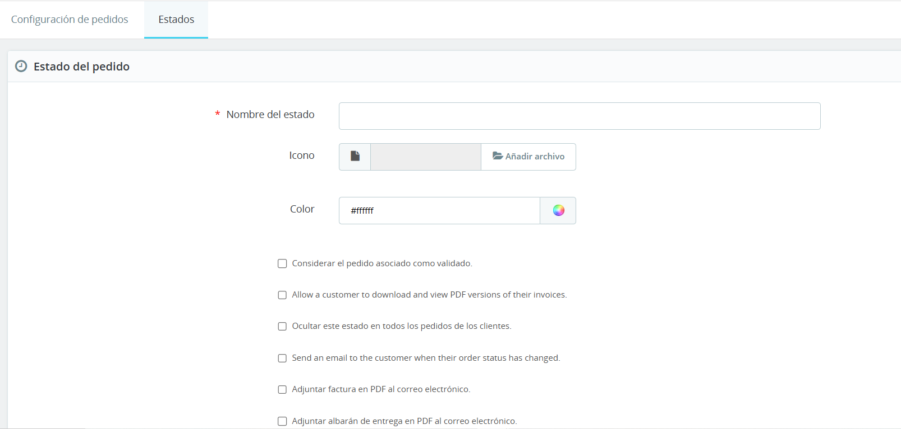
Figura 2.2.c: Añadir estado de Pedido.
Estados de devolución:
Permite gestionar estados específicos para pedidos devueltos.
Acceso: Haz clic en "Añadir nuevo estado de devolución".
Formulario: Completa con:
Nombre del estado: Claro y distintivo.
Color: Selecciona el color adecuado para este estado.
Guardar el estado: Finaliza la creación del nuevo estado.
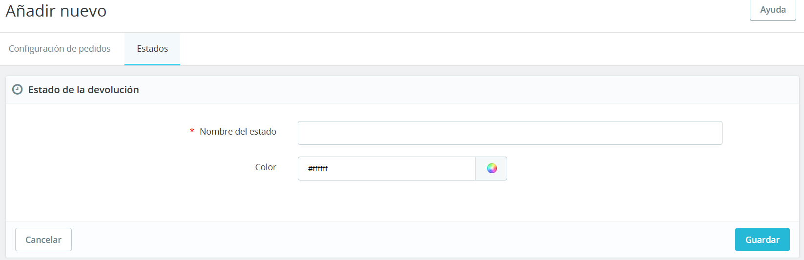
Figura 2.2.d: Añadir estado de Devolución.
📦 3.CONFIGURACIÓN DE PRODUCTOS
3.1 Ajustes generales de producto
Modo catálogo:
Convierte la tienda en una galería sin opción de compra.
El modo catálogo desactiva el carrito de la compra en tu tienda. Los visitantes podrán navegar a
través del catálogo de productos,
pero no podrán adquirirlos
Número de días que un producto se considera 'nuevo': Establece el tiempo
para promocionar productos nuevos.
Tamaño máximo del resumen del producto: Limita la extensión de la
descripción.
Descuento por cantidad basado en: Configura descuentos basados en producto
individual o combinaciones.
Forzar actualización de la URL amigable: Actualiza automáticamente la URL
si cambia el nombre del producto.
Activar nuevos productos por defecto: Los productos nuevos se activan
automáticamente al ser creados.
Figura 3.1: Configuración de Preducto.
3.3 Página del producto
Mostrar cantidades disponibles: Informa a los clientes del stock disponible en
la página de producto.
Mostrar el botón "Añadir al carrito": Evita agregar productos al carrito sin
seleccionar atributos específicos.
Separador del ancla de atributo en los enlaces de producto: Elige el separador
entre atributos de producto en las URL, que puede ser una coma (",") o un guion ("-")..
Mostrar el precio unitario con descuento: muestra el precio unitario descontado
en vez del descuento unitario.
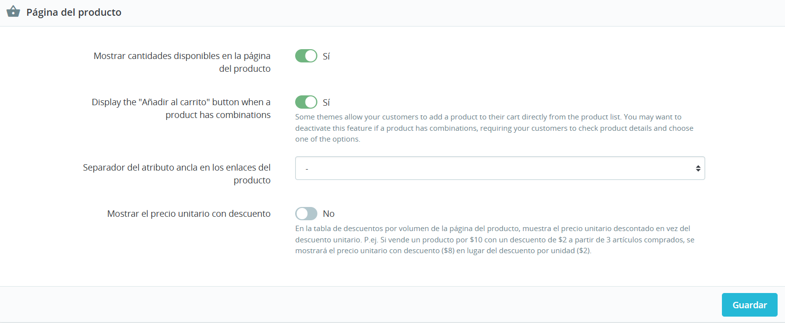
Figura 3.2: Configuración pagina de Preducto.
3.4 Stock de Productos
Habilitar gestión de stock: Controla el inventario de productos y se
actualiza automáticamente con cada compra.
Gestión de stock de packs por defecto: Esta opción determina cómo se
actualiza el stock cuando se venden packs de productos. Las opciones son:
Decrementar solo el packs: : Solo se actualiza el stock del pack cuando
se vende.
Decrementar solo los productos del pack: Solo se actualiza el stock de
los productos dentro del pack.
Decrementar ambos: Se actualizan tanto el stock del pack como el de
los productos individuales cuando se vende un pack.
Mostrar atributos no disponibles en la página del producto: Si un producto
solo tiene una combinación o un atributo no tiene stock en todas las combinaciones posibles,
puedes elegir ocultar ese atributo en la página del producto
Mostrar número de productos disponibles si su cantidad es inferior a Establecer a "0" para desactivar esta característica..
Permitir la compra de productos fuera de stock: Si activas esta opción, los
clientes podrán seguir comprando productos que ya no estén en stock.
Etiqueta de productos en stock: Muestra una etiqueta para los productos que
están disponibles en stock.
Etiqueta de productos fuera de stock con pedidos permitidos: Muestra una
etiqueta para los productos fuera de stock, pero que permiten realizar pedidos con espera de
reposición
Tiempo de entrega de productos en stock: Muestra el tiempo de entrega
estimado para los productos fuera de stock, pero que permiten realizar pedidos.
Mostrar etiqueta de fuera de stock en las páginas de listado de productos: Muestra una etiqueta "Agotado" junto a los productos fuera de stock en las páginas de
listado de productos.
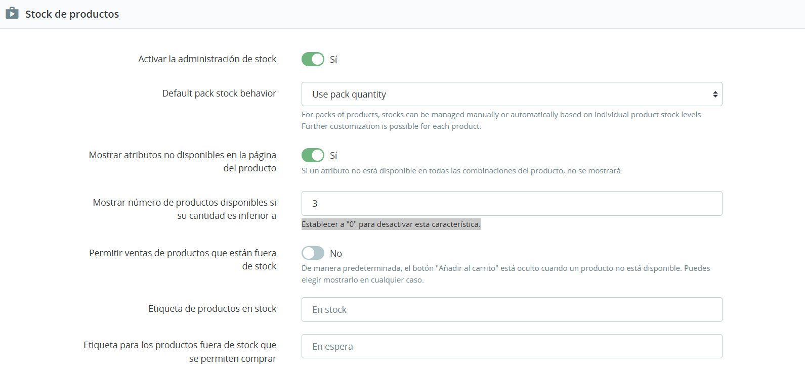
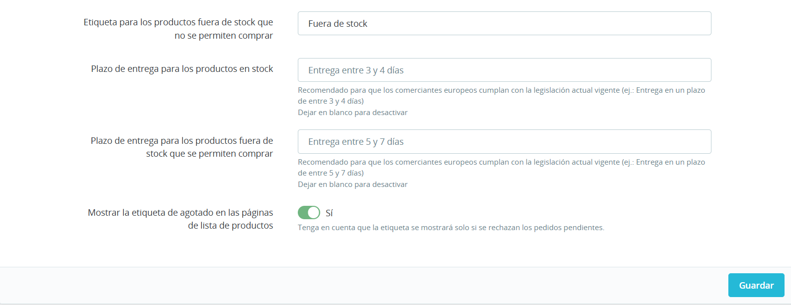
Figura 3.2: Configuración stock de Preducto.
3.2 Paginación
Productos por página: Establece el número de productos a mostrar en cada página
de categorías.
Orden predeterminado: Establece cómo se ordenan los productos: por nombre,
precio, fecha de adición, fecha de modificación, posición en la categoría, marca, cantidad
disponible o referencia..
3. Método de orden: Elige si el orden será ascendente o descendente.
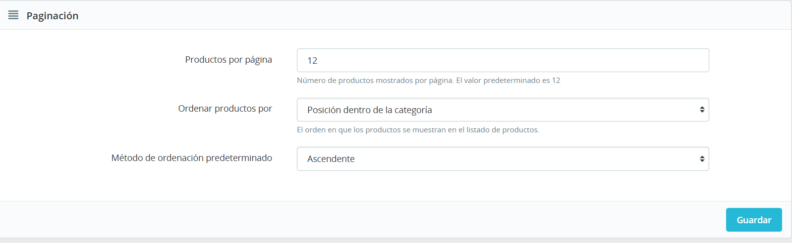
Figura 3.2: Configuración paginación.
🤵4.CONFIGURACIÓN DE CLIENTES
4.1 configuración de Clientes
Volver a mostrar el carrito al iniciar sesión: Restaura el carrito al iniciar
sesión.
Enviar un correo tras el registro: Envía un correo de bienvenida con la
información de la cuenta al registrarse.
Retraso para restablecer la contraseña: Define un límite de tiempo entre cada
solicitud de restablecimiento de contraseña.
Habilitar modo B2B:Activa funcionalidades para clientes empresariales, como
precios personalizados y gestión de facturas.
Solicitar fecha de nacimiento: : Permite pedir la fecha de nacimiento del
cliente durante el registro.
Ofertas de socios: : Permite ofrecer suscripciones a boletines de socios
comerciales.
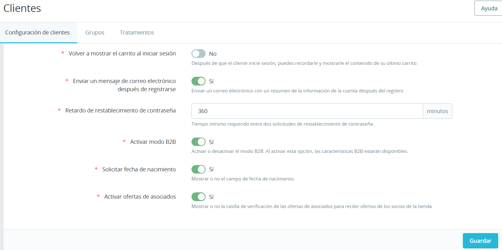
Figura 4.1: Configuración cliente.
4.2Grupos
PrestaShop te permite asignar a tus clientes a diferentes grupos para otorgarles privilegios
específicos.
Puedes crear tantos grupos como desees y asignar a un cliente a varios grupos.
Grupos predeterminados: Asigna a los clientes a diferentes grupos (Visitante,
Invitado, Cliente) con diferentes privilegios.
Visitante:Personas sin cuenta de cliente o no autenticadas.
Invitado: Personas que han realizado un pedido usando la opción de
Compra como invitado.
Cliente:Personas que han creado una cuenta y están autenticadas.
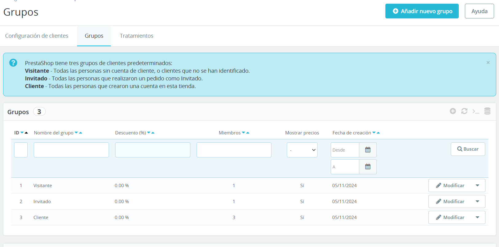
Figura 4.2: Configuración group cliente.
Creación de un grupo: Haz clic en "Añadir nuevo grupo" para crear un grupo con
las siguientes opciones:
Nombre:Usa un nombre descriptivo para el grupo.
Descuento (%): Configura un descuento para todos los miembros de este
grupo
Método de visualización de precios:o Elige el método de visualización
de precios: con impuestos o sin impuestos.
Mostrar precios:Puedes restringir la visualización de precios a
usuarios registrados, por ejemplo, ocultando los precios a los visitantes.
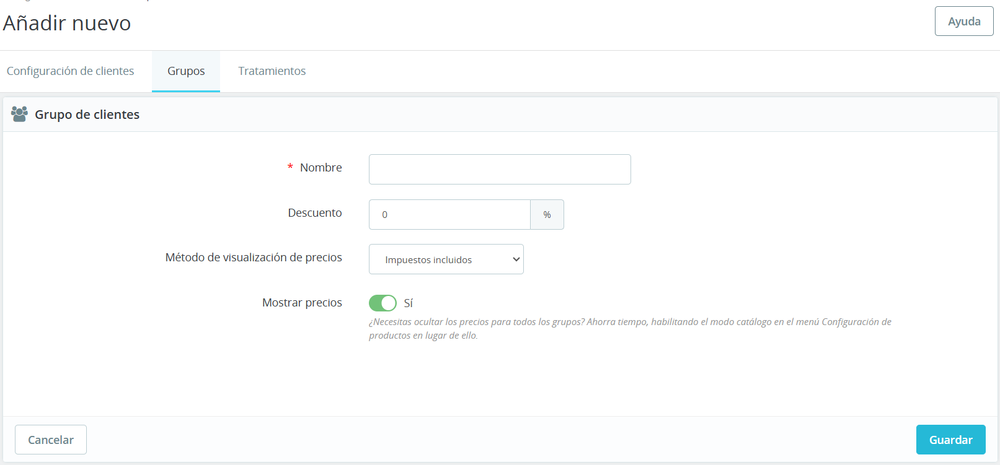
Figura 4.2.a: Añadir group cliente.
4.3Tratamiento
permiten definir mejor a los clientes, lo que puede ser útil tanto para personalizar la relación con
el cliente como para funciones de ciertos módulos.
Figura 4.3.a: Titulos Social.
Agregar un nuevo título
Haz clic en el botón Añadir nuevo título socialy completa el formulario
Título social:Elige un título común o único (ej. "Señor", "Lady",
"Magnífico", "Jedi").
Género: Algunos títulos pueden aplicarse a ambos géneros, en cuyo caso
se debe marcar como Neutral.
Imagen:Sube una imagen de 16x16 px para representar el título.
Guardar:Una vez completado, guarda el título social.
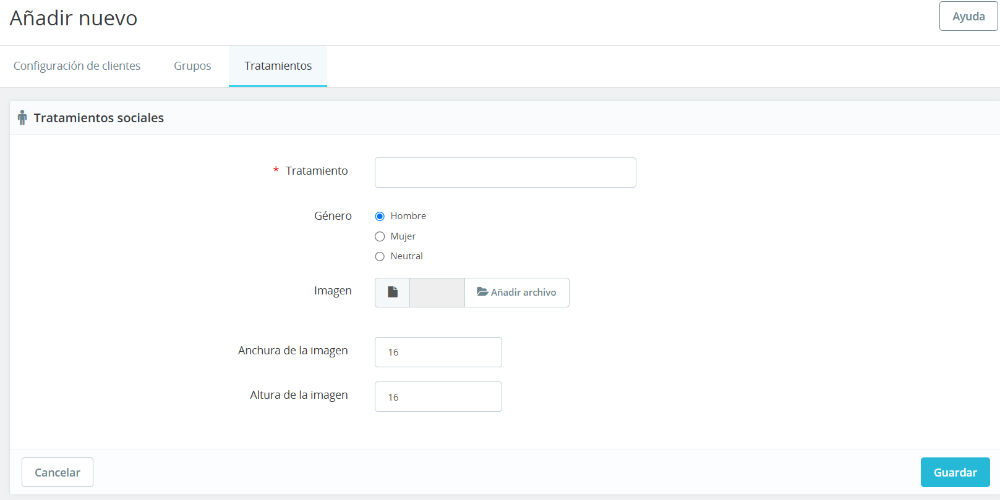
Figura 4.3.a:Añadir Titulos Social.
📞 5.CONTACTOS
5.1 Contacto
Puntos de contacto: Configura múltiples puntos de contacto para atención al
cliente y otros servicios.
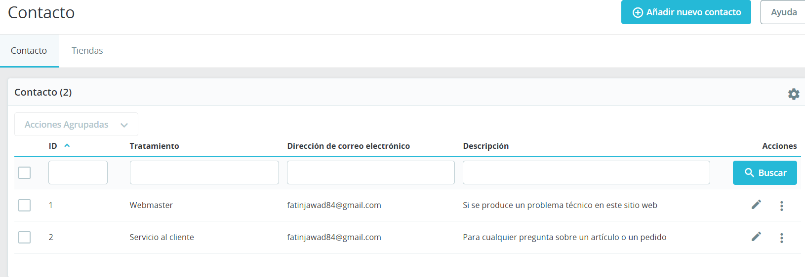
Figura 5.1: lista de Contacto.
Crear una cuenta de contacto nueva:
1. Haz clic en"Añadir nuevo contacto"Elige un nombre para el contacto.
Título:Elige un nombre descriptivo para el punto de contacto.
Dirección de correo electrónico:Esta es la dirección a la que se
enviarán los mensajes.
¿Guardar mensajes?: ?: Decide si los mensajes enviados a este contacto
deben guardarse en la herramienta de Atención al Cliente o simplemente ser enviados al
correo electrónico.
Descripción: Añade una breve descripción (máximo una línea) que se
mostrará en el formulario de contacto para que el cliente sepa el propósito del
contacto.
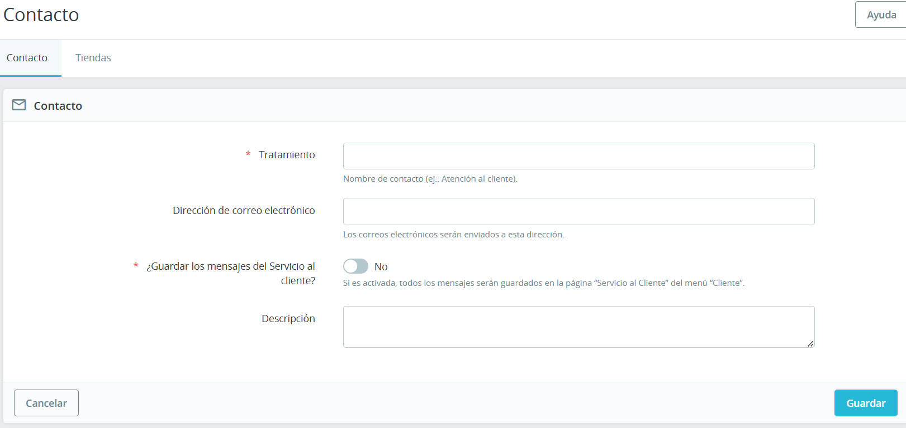
Figura 5.1:Añadir contacto.
5.2 Tienda
Si tienes tiendas físicas, PrestaShop te permite listar sus detalles de contacto para que tus
clientes puedan visitarlas.
Lista de tiendas
En la interfaz de administración, todas tus tiendas están listadas en una lista conveniente,
mostrando la información de cada tienda junto con un indicador que señala si la tienda está
activa o no.
Esto es útil si deseas recopilar la información de una nueva tienda antes de su lanzamiento y
tener la página lista para su presentación
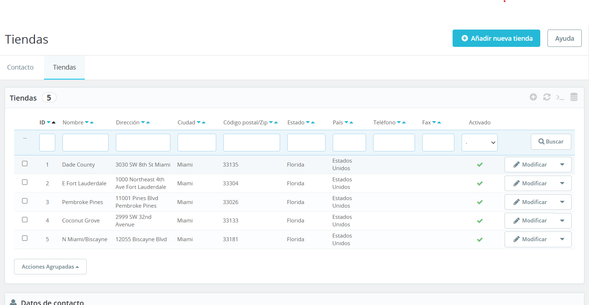
Figura 5.2:Lista-tiendas.
Añadir una nueva tienda:Haz clic en"Añadir nueva tienda"y
Completamos el formulario.
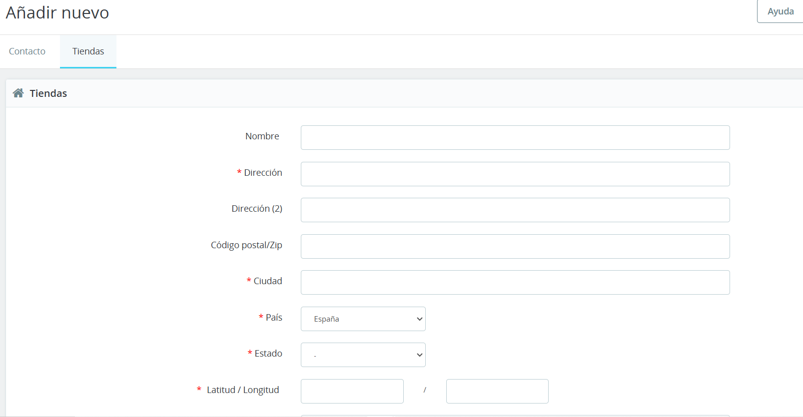
Figura 5.2:Lista-tiendas.
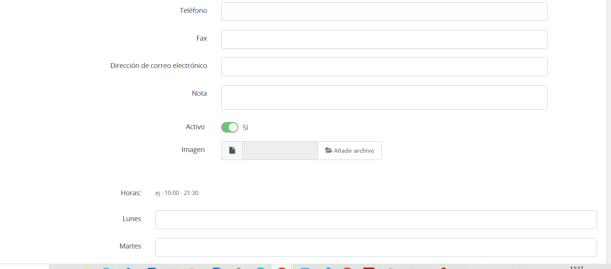
Figura 5.2:Lista-tiendas.
🎯 6.TRÁFICO & SEO
6.1 SEO y URLs
Las herramientas incluidas en esta página te ayudarán a mejorar el posicionamiento de tu sitio
PrestaShop en los motores de búsqueda, y así llegar a más clientes potenciales.
SEO y URLs
La página "SEO y URLs" te presenta un listado de todas esas páginas que sin duda se
beneficiarán de las URLs amigables: páginas estáticas, páginas de la cuenta de usuario,
páginas con contenidos generados automáticamente,
y te permite editar sus URLs amigables, así como sus etiquetas meta (título, descripción,
palabras clave).
Optimización SEO:
Configura metaetiquetas (título, descripción, palabras clave) para
mejorar la visibilidad de cada página en los motores de búsqueda.
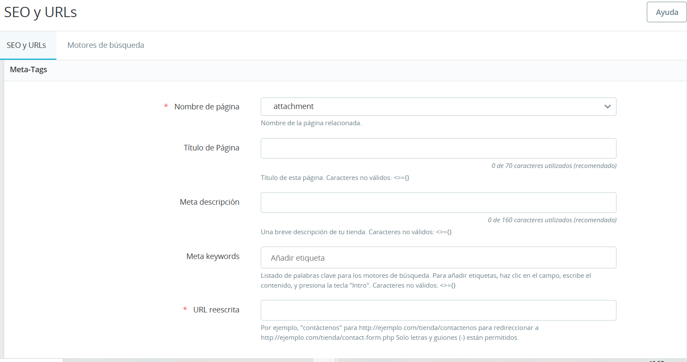
Configuración de URLs
Opciones de URL:
URLs Amigables: Habilita URLs legibles para que las direcciones web
sean descriptivas. Requiere soporte de reescritura de URLs en el servidor.
URL Acentuada: Permite el uso de caracteres especiales en las URLs.
URL Canónica: Previene contenido duplicado al asignar una URL
preferida a cada página.
Opciones de redirección:
Sin redirección: Puede generar problemas de contenido duplicado.
301 Movido permanentemente: Usa código HTTP 301 para redirección
permanente.
302 Movido temporalmente: Usa código HTTP 302 para redirección temporal.
Desactivar opción MultiViews de Apache: MultiViews puede causar problemas
con URLs amigables, desactívalo si es necesario.
Desactivar el módulo mod_security de Apache: Mod_security es un cortafuegos
que puede bloquear características; desactívalo en caso de errores.
Formato de los enlaces
Personaliza la estructura de las URLs para productos, categorías y otras páginas,
mejorando la legibilidad y el SEO.
Se muestra solo si las URLs amigables están habilitadas.
Puedes cambiar la forma en la que se generan las URLs amigables modificando la ruta de
un recurso en tu tienda.
Por ejemplo, la ruta predeterminada para mostrar la página de un producto es
{category:/}{id}-{rewrite}{-:ean13}.html, que da como resultado
/vestidos-de-verano/7-vestido-chiffon-estampado.html. Podrías cambiar esa
ruta a
{manufacturer:/}{id}-{rewrite:/} para obtener
/fabricante-moda/7-vestido-chiffon-estampado/.
Ocho campos están disponibles de forma predeterminada, y cada uno está acompañado por
una lista de palabras clave
disponibles. Algunas palabras clave son obligatorias y están indicadas con un
"*".
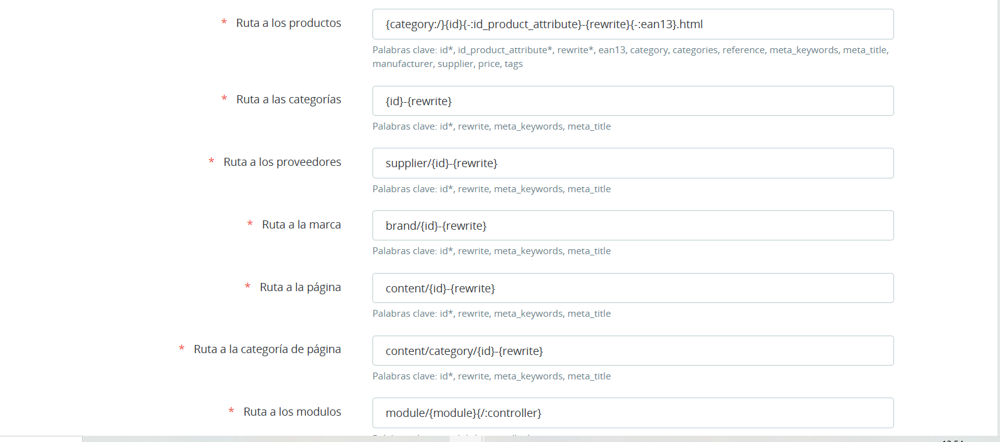
Establecer URL de la tienda
Aquí puedes editar el dominio principal, el dominio seguro
(SSL) y la carpeta base donde está instalado PrestaShop.
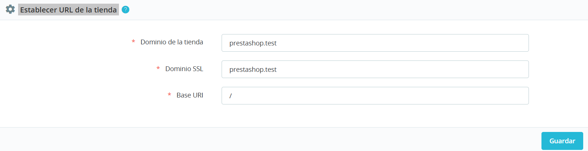
Generación de archivo robots.txt:
El archivo robots.txt restringe el acceso de los robots de motores de búsqueda a
ciertas páginas del sitio. Solo necesitas este archivo si quieres evitar que se indexen
ciertos contenidos. La herramienta de PrestaShop genera este archivo automáticamente con
exclusiones para directorios no públicos.
6.2 Motores de Búsqueda
Muchos de tus visitantes llegarán a tu tienda desde un motor de búsqueda. Con el fin de saber lo que
ellos estaban buscando, y hacer que tu tienda sea más productiva utilizando esta información,
es necesario conocer las consultas que ellos hicieron.
Esta página presenta una tabla de todos los motores de búsqueda que tu instalación de PrestaShop
soporta – es decir, aquellos motores que PrestaShop puede reconocer y de los que puede extraer
la consulta que realizó el visitante en el motor de búsqueda para llegar a tu tienda.
Aunque Google es el buscador más utilizado, hay muchos otros motores de búsqueda que tus visitantes
podrían utilizar para encontrar tu tienda.
Por lo tanto, también debes tener a estos en cuenta para recoger y analizar las consultas realizadas
en ellos. Cuando un motor
de búsqueda desconocido comience a atraer visitantes regularmente, deberás añadirlo a tu base de
datos – de lo contrario, estos visitantes
aparecerían marcados en tus estadísticas como procedentes de "otros motores de búsqueda", lo que no
te será de utilidad.
Añadir un motor de búsqueda
Es muy fácil añadir un motor de búsqueda a tu listado.
Supongamos que queremos añadir DuckDuckGo, un motor de búsqueda que respeta la privacidad de los
datos de sus usuarios:
Toma tan sólo la parte del servidor, que es específica para este motor de búsqueda, y escribe
está en el campo "Servidor". En nuestro caso, "duckduckgo".
Encuentra la variable de consulta:\.
Encuentra la cadena de consulta. Esta debe ser una letra, seguida por un signo "=",
seguido por la propia consulta, y cerradas con un
carácter "&" o el final de la cadena. En nuestro caso, esta es "q=zapatos+niños".
La variable de consulta es la letra anterior al signo "=". En nuestro caso: "q". Escribe
está en el campo "$_GET variable".
Haz clic en el botón "Guardar", y de ahora en adelante, PrestaShop será capaz de reconocer a los
visitantes provenientes desde DuckDuckGo.
La página "Búsqueda" permite configurar las funciones de búsqueda de tu tienda.
Listado de Alias
Cuando los clientes realizan una consulta utilizando el buscador interno de tu tienda, podrían
cometer errores.
Si PrestaShop no encuentra resultados correctos para la consulta del cliente, la característica
"alias" podría
proporcionar ciertas alternativas, corrigiendo las consultas erróneas.
buscar.png
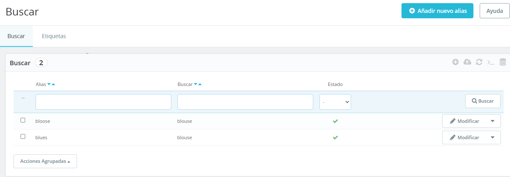
Para crear un nuevo alias, sigue estos pasos:
Dirígete a la pestaña "Búsquedas en la tienda" en "Estadísticas". Desde aquí
puedes ver las palabras
escritas y los errores más frecuentes de los clientes.
Añade los errores más comunes a tu listado de alias, para guiar al usuario al producto correcto.
Haz clic en "Añadir nuevo alias" en la página de preferencias "Búsqueda".
En el formulario, indica el error tipográfico que deseas corregir y la palabra correcta a la que
deben dirigirse.
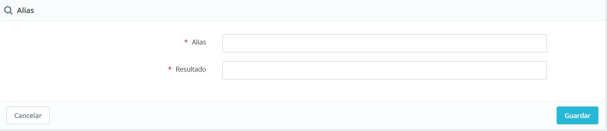
Indexación
Esta sección muestra la cantidad de productos que se pueden buscar en tu tienda, comparándola con
los productos en la base de datos.
Si los valores no coinciden, haz clic en "Añadir los productos que faltan al
índice".
Si has cambiado productos ya indexados, puedes optar por "Reconstruir el índice
completo".
Además, PrestaShop ofrece una URL para ejecutar tareas cron que reconstruyan el índice
automáticamente.
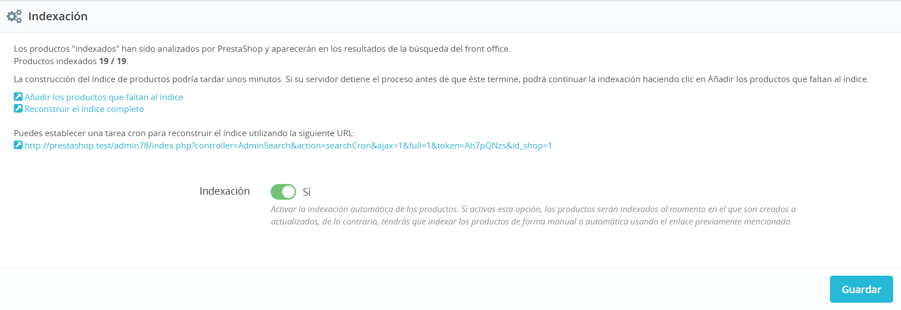
Finalmente,la opción "Indexando" permite que los productos sean indexados al
crearse o modificarse.
Alternativamente, debes indexar los productos manual o automáticamente.
Opciones de Búscar
Configura aquí el comportamiento de la función de búsqueda:
Buscar en el interior de las palabras: Permite coincidencias dentro de las
palabras (ej., "lus" para "blusa").
Buscar coincidencia final exacta: Ofrece resultados coincidentes al final de la
palabra.
Longitud de palabra mínima: Define el tamaño mínimo para indexar y buscar,
omitiendo palabras cortas.
Palabras en la lista negra: Lista de palabras a descartar en las búsquedas.
Separa cada una con el carácter "|".
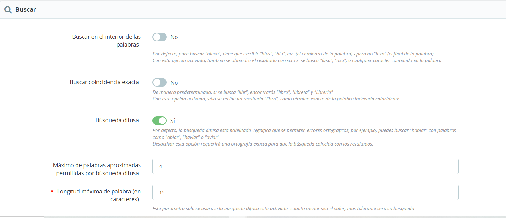
Peso
El "Peso" en PrestaShop permite priorizar datos específicos en las búsquedas. Un artículo con un
peso de 8 será
más relevante que uno con peso 2.
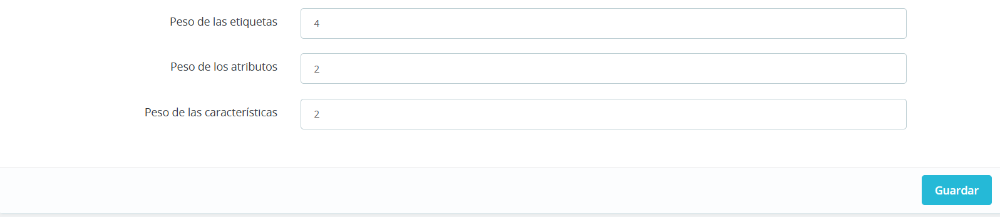
Por ejemplo, el Peso del nombre del producto tiene un valor 6, mientras que el de
las
etiquetas es 4 y el de la descripción es 1. Esto significa que un
producto con
"ipod" en su nombre aparecerá antes que otro que solo tenga "ipod" en la descripción.
Se pueden asignar pesos a múltiples elementos: descripción breve, categorías, etiquetas, atributos,
etc.
Enlaces de Video
Explora estos videos para aprender más sobre la configuración de tu tienda en PrestaShop:
Configuración Básica
⚙ Aprende a configurar los ajustes básicos de tu tienda.
Mantinamento
🔧Cómo activar el Modo Mantenimiento en PrestaShop 8.